Imprinted ConcretePatterned finishes for driveways and outdoor areas
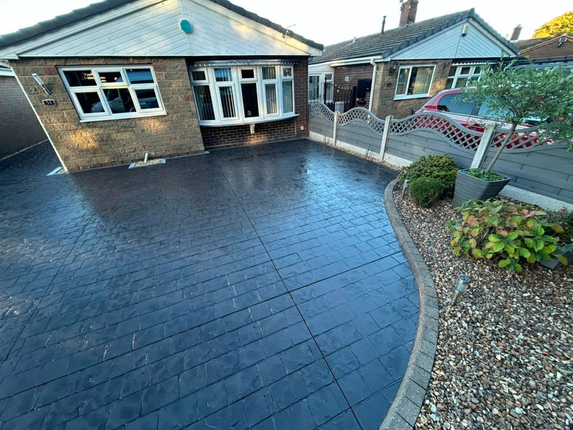
STAFFORDSHIRE · IMPRINTED CONCRETE SPECIALISTS
Make the first impression last.
Distinctive driveways, patios and pathways built with attention to pattern, finish and the shape of your property.
Imprinted ConcreteDrivewaysPatios & PathwaysResin Bound
DrivewaysConcrete, resin bound and tarmac options
Patios & PathwaysOutdoor spaces shaped around the property
LandscapingGroundwork, garden projects and finishing details
PATTERN IMPRINTED CONCRETE
Character underfoot. Built for everyday life.
LP Driveway Specialist creates imprinted concrete surfaces in a range of patterns and tones. A well-planned drive, path or patio can make the approach to a property feel entirely different.
Discuss your project →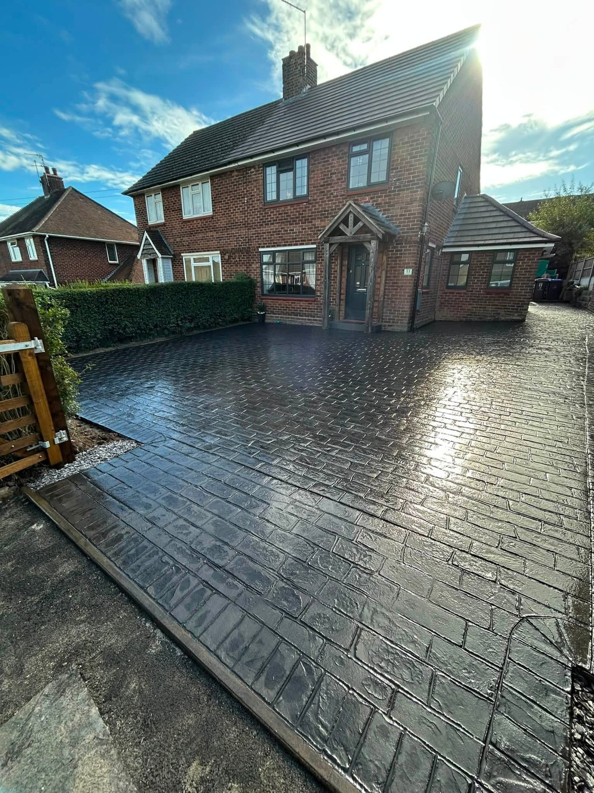
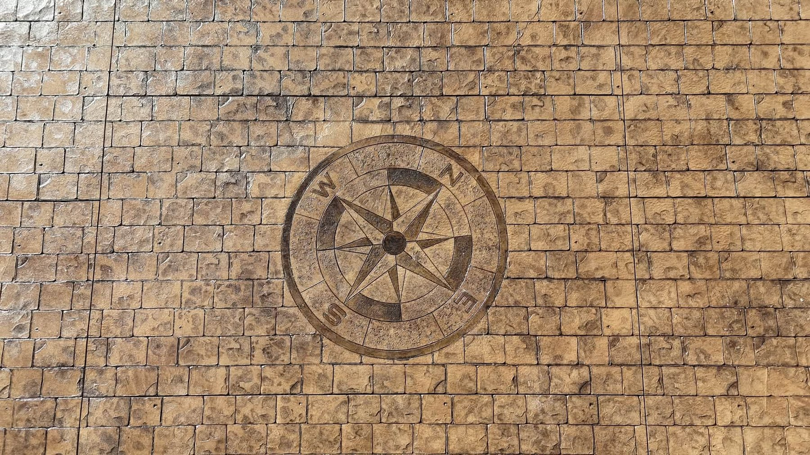
DRIVEWAYS & OUTDOOR LIVING
A surface that suits the whole home.
From a practical front drive to an outdoor area for gathering, the team works on driveways, patios, pathways, resin bound surfaces and landscaping. Ask about the surface and finish that fit your plans.
Get a quote →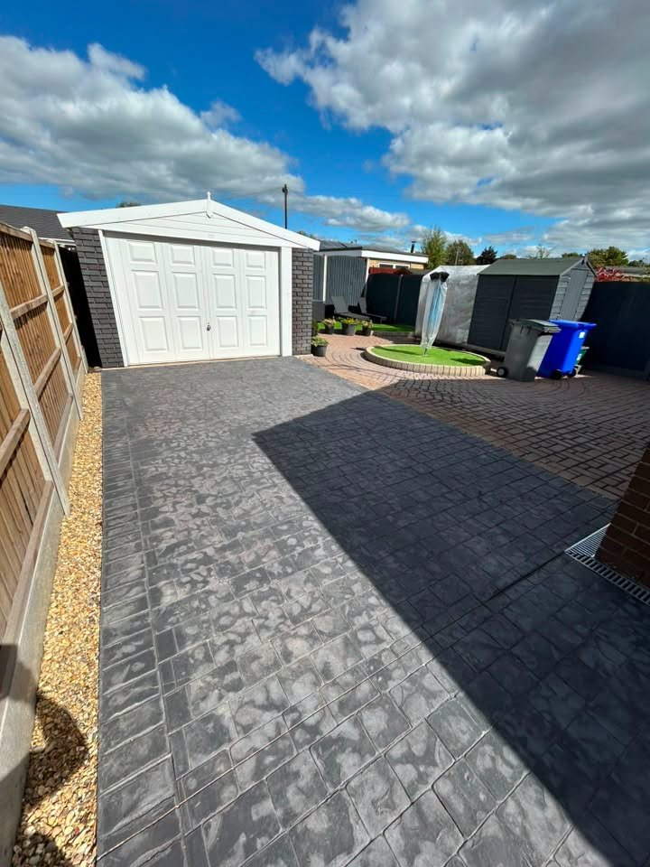
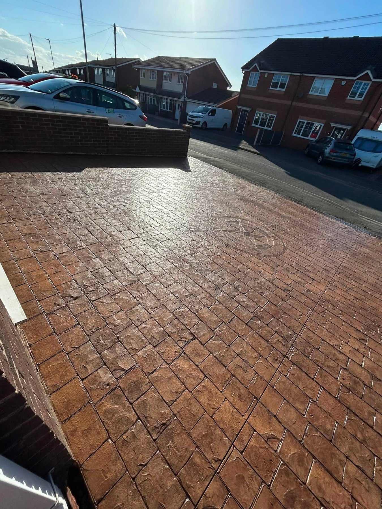
RECENT WORK
See the finish for yourself.
Driveways, patios and paths from the LP project photos.
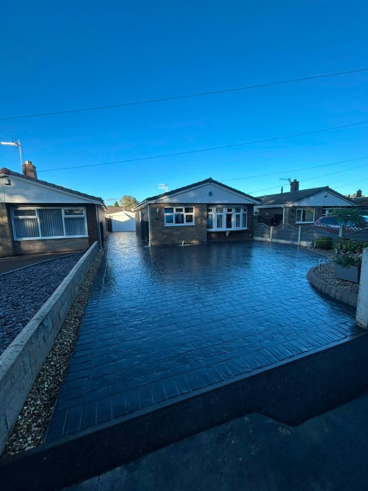
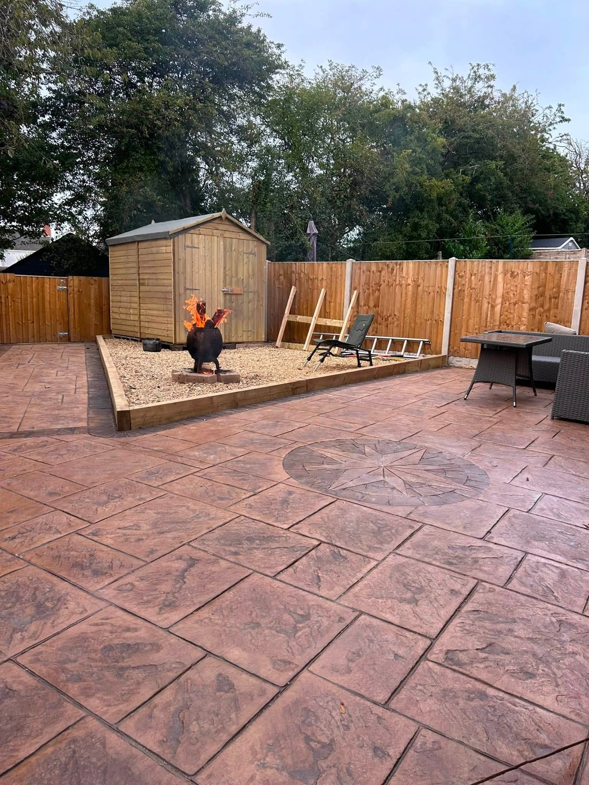
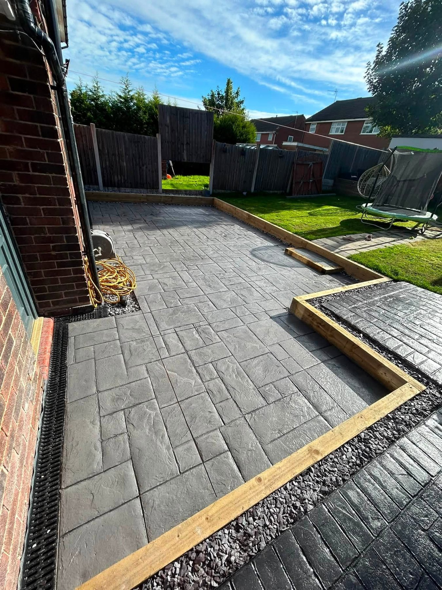
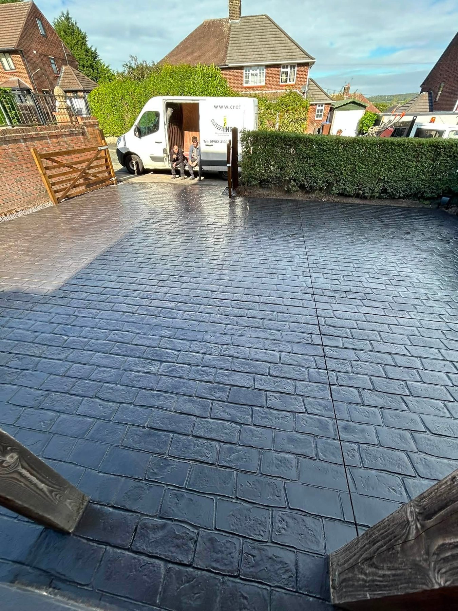
THE WORK BENEATH THE FINISH
Preparation matters as much as pattern.
Good surfaces begin with the groundwork. These supplied images show stages of a project being prepared and concrete being laid before the final finish is revealed.
Plan your project →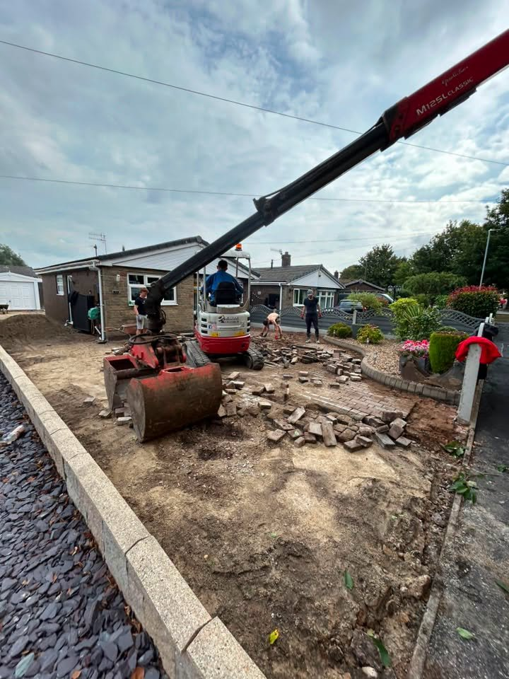
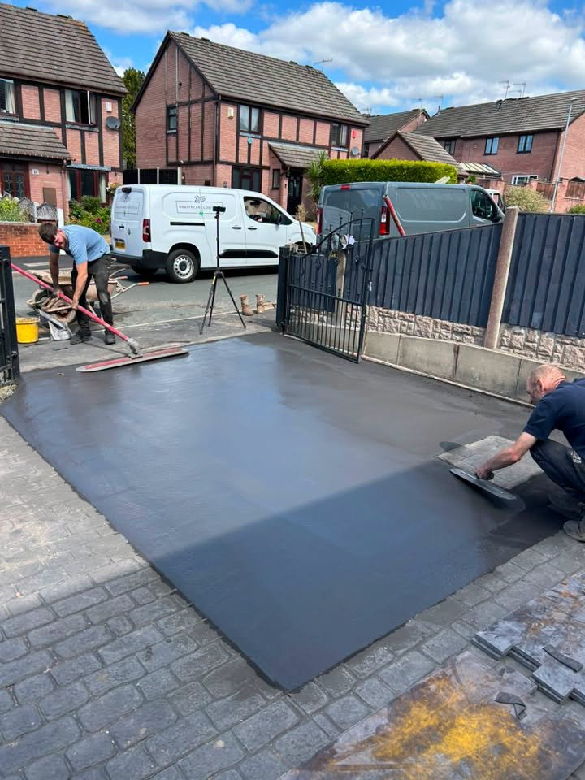
LP DRIVEWAY SPECIALIST LTD
Experience in every stage of the job.
LP Driveway Specialist LTD serves Staffordshire with imprinted concrete, driveways, patios, pathways and landscaping. The team states 47+ years of combined experience.
01
Surface choice
Explore imprinted concrete, resin bound and tarmac driveway options.
02
Pattern & detail
Choose a look that complements your home and outdoor space.
03
Full project work
From initial preparation through to the final surface.
REQUEST A QUOTE
Tell LP about your project.
Complete the form and WhatsApp will open with your details ready to send. This is a quote request, not a confirmed booking.
Prefer to call? 07857 202814
LP DRIVEWAY SPECIALIST LTD
Ready to transform your driveway?
Staffordshire · Driveways · Patios · Landscaping